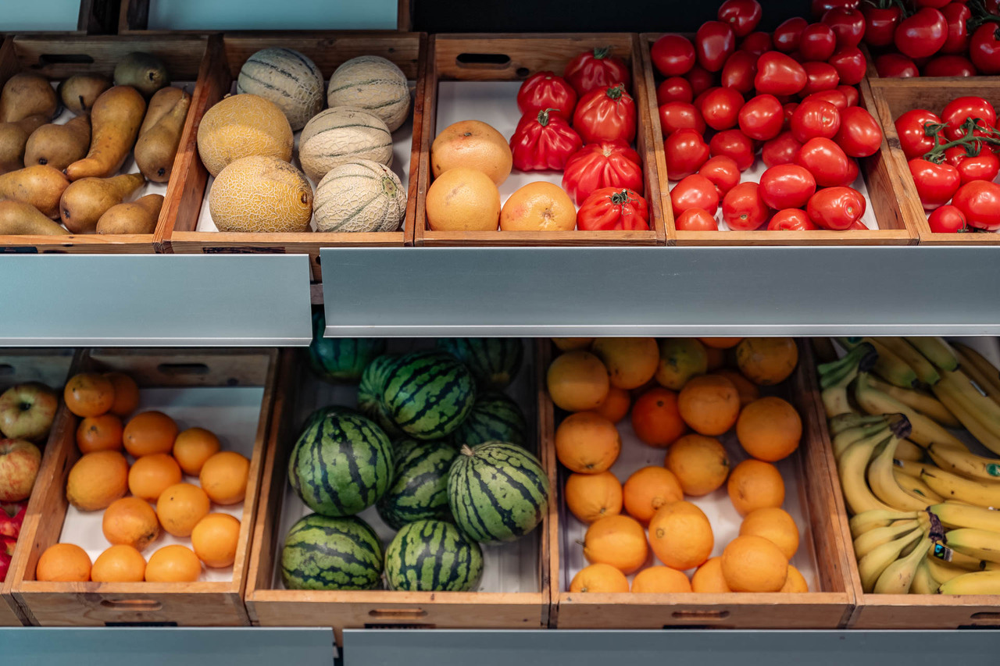

Groente en fruit
Groente alleen uit Europa, zoveel mogelijk uit Nederland, dus je eet vanzelf met het seizoen mee. Fruit ook praktisch alleen uit Europa, met bananen en avocado's als uitzondering. Zeven keer per week verse levering: van Odin uit Geldermalsen, Udea en de Lindegaard uit Beusichem met streekproducten uit de Betuwe.